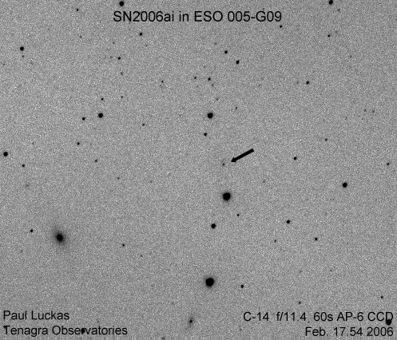

Our second discovery for the year, and for the month of February !
(click on image for larger version)

Electronic Telegram No. 406 Central Bureau for Astronomical Telegrams INTERNATIONAL ASTRONOMICAL UNION M.S. 18, Smithsonian Astrophysical Observatory, Cambridge, MA 02138, U.S.A. IAUSUBS@CFA.HARVARD.EDU or FAX 617-495-7231 (subscriptions) CBAT@CFA.HARVARD.EDU (science) URL http://cfa-www.harvard.edu/iau/cbat.html
SUPERNOVA 2006ai IN ESO 5-G9 P. Luckas, Perth, W. Australia; O. Trondal, Oslo, Norway; and M. Schwartz, Patagonia, AZ, report the discovery of an apparent supernova on unfiltered CCD frames taken with the 0.35-m Tenagra telescope at Perth on Feb. 17.54 (at mag 16.2) and 19.52 UT (mag 16.0) in the course of the Tenagra Observatory Supernova Search. SN 2006ai is located at R.A. = 7h29m52s.16, Decl. = -84o02'20".5 (equinox 2000.0), which is 2".5 west and 1".8 south of the center of ESO 5-G9 (which itself has position end figures 29m53s.77, 02'18".7). Nothing was visible at the position of 2006ai on an image taken by Luckas on 2005 Dec. 16.79 (limiting magnitude about 18.5).
SUPERNOVAE 2006Y AND 2006ai
N. Morrell and G. Folatelli, on behalf of the Carnegie Supernova Project, report that spectroscopy (range 380-930 nm) of SN 2006Y (cf. IAUC 8668), obtained on Feb. 27.14 UT with the Las Campanas 2.5-m du Pont telescope (+ WFCCD spectrograph), showing it to be a type-II event, nearly one month after explosion. A spectrum of the apparent nucleus of the host galaxy was also obtained, from which is derived a recession velocity of 10074 km/s (redshift 0.0336 +/- 0.0001). From nebular emission lines superimposed on the supernova spectrum, a slightly different redshift of 0.0333 +/- 0.0001 is derived; using this value, an expansion velocity of 7650 km/s for this supernova is derived from the minimum of the H_beta absorption. A redshift of 0.0341 +/- 0.0002 was also measured for ESO 207-G27 (a galaxy located southeast of the supernova host). A spectrum of SN 2006ai (cf. IAUC 8674), obtained on Mar. 5.12 with the same instrumental configuration, shows it to be a type-II supernova, at least one month after explosion, for which an expansion velocity of 8050 km/s is derived from the minimum of the H_beta absorption, considering a redshift of 7426 km/s (z = 0.0158 +/- 0.0001) measured from emission lines in the spectrum of the host galaxy.